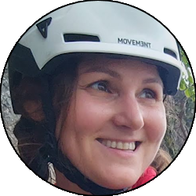

Relazione
| Data Uscita | 23-07-2023, Domenica | Area | Coca |
|---|---|---|---|
| Luogo di Partenza | Agneda - Piateda (SO) | Quota |
1230m la partenza 2004m la Capanna Mambretti |
| Dislivello | 1000m (circa) | Tempi | 05:00 ore |
| Esposizione | Ovest, Sud-Ovest | Difficoltà Tecnica | T4 |
| Punti di Appoggio | Capanna Mambretti (non gestita) | Acqua | Diversi torrenti sull'intero percorso |
| Partecipanti |
 Nina,
 Oracolo, Oracolo,
 Walterone Walterone
|
||
(clicca sull'immagine per scarica la traccia GPS)
Accesso
Da Lecco seguire la SS36 fino a Colico, da qui imboccare la Valtellina fino a Sondrio. All'ultima uscita della tangenzialina di Sondrio (prima del passaggio a livello) prendere a destra per Piateda e seguire la strada per Piateda Alta fino alla svolta per la centrale di Vedello. Proseguire oltre la centrale, superare un ponte e al bivio prendere a sinistra seguendo la strada ripida ma comoda fino alla piana dopo le case di Agneda (area picnic e fine del tratto di strada percorribile liberamente).
Giro
Dalla piana di Agneda seguire la comoda strada in salita che con diversi tornanti porta in direzione della diga del lago di Scais. Quasi raggiunta la diga ci si trova davanti a un bivio (cartelli), dove si abbandona la strada e si prende il sentiero a sinistra, che risale sempre comodamente nel bosco fino a sbucare sul lato destro idrografico del Lago di Scais, che si percorre fino alla Case di Scais verso il fondo, in posizione panoramica invidiabile.
Appena prima del cancello delle case si trova un ulteriore bivio (cartelli) dove si prende a sinistra l'evidente sentiero che sale a svolte nel bosco in direzione dell'Alpe Caronno. Raggiunta la piana dove si trova quest'ultima la si supera direttamente sulla sinistra tra i prati (attenzione ai cani da guardia), portandosi verso il dosso boscoso sopra al quale sorge la Capanna Mambretti. Si risale il bosco, andando a destra a un bivio tra l'Alpe Rodes e la Capanna Mambretti (cartelli anche lì), e si risale su sentiero sempre comodo ma costantemente in salita, fino al dosso erboso su cui sorge la Capanna.
Dalla Capanna ci si porta verso Nord, su traccia bollata ma non sempre evidente (cartello Lago Reguzzo alla Capanna), rimontando la dorsale erbosa che scende dalle cime orobiche verso il rifugio. Arrivati in una zona dove la valle si apre sul vallone che da sinistra sale verso la cresta dall'Alpe di Rodes, bisogna abbandonare il sentiero bollato compiendo un semicerchio verso sinistra, attraversando diversi fiumiciattoli per portarsi sulla destra idrografica della valle; attenzione, questo tratto ha rade tracce ma fondamentalmente è fuori sentiero, comunque non è niente di impegnativo. Si arriva a prendere un'evidente traccia a mezzacosta che percorre tutta la destra idrografica della val Caronno, e anche quest'ultima la si abbandona prima di un'evidente dosso erboso, scendendo verso sinistra cercando il passaggio migliore (tendenzialmente stando sulla destra) fino a sbucare sopra all'Alpe Rodes, che si raggiunge nella bella piana.
Dall'Alpe Rodes ricominciano i sentieri segnati, e si segue in direzione Alpe Caronno/Agneda scendendo leggermente a sinistra, per sentiero ripido ma sempre evidente. Si torna al bivio che si era incontrato in salita e si imbocca la discesa che ripercorrerà ciò che si è fatto in salita, passando prima dall'Alpe Caronno, poi dal lago di Scais, per infine ritornare ad Agneda.